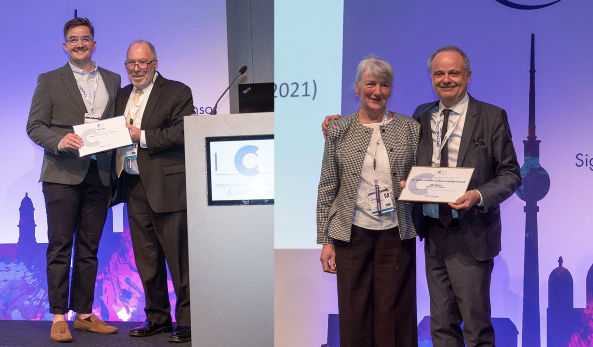

ICRS

ICRS Focus Meeting: Allografts & Synthetics (Nice, France) - April 27-29 2023
Dr Jade Perry was awarded a prestigious travel scholarship to attend the Allograft and Synthetics focus meeting in Nice. The exciting program explored the knee joint as a whole organ, focusing not only on the treatment of articular cartilage but also other issues such as meniscal allografts and malalignment. The conference effectively brought together everything from diagnostics to imaging, to conservative and surgical treatments, as well as basic science (biological approaches). Due to the international nature of the conference, it was a great opportunity to hear from a diverse range of speakers and network with experts from across the globe.
ICRS - April 2022
In April, 11 members of RJAH Orthopaedic hospital, inclusive of surgeons and researchers, attended the ICRS world congress conference in the bustling city of Berlin, Germany. The meeting offered an opportunity to listen to thought provoking talks varying from surgery techniques, current and emerging cell therapies, to industry talks and application of products. Armed with 7 talks and 8 posters between us, we showcased some of our outstanding research to members of the conference and were met with positive, encouraging responses. A very proud moment of the conference was witnessing one of the special members of our team, Professor Sally Roberts, achieving the lifetime recognition award. As well as Dr Timothy Hopkins awarded a poster prize for his research ‘initial development of a synovial joint on a chip model’. Alongside the conference, there were many social events and networking opportunities to get involved in, including a next generation ‘happy hour’, in which new scientists and experienced minds came together to gain new knowledge and partnerships. Whilst not forgetting to put a little time aside to explore the historical sights of Berlin.
List of abstracts (oral presentations):
- Martyn Snow - “The Importance of ACI-Position in the context of other methods/unmet needs in larger defects”
- Martyn Snow - “Review of Outcomes Surrounding Meniscal Allograft Transplantation”
- Karina Wright, Jingsong Wang, Peter Denis Gallacher, Zhanfeng Cui, Sally Roberts - “Phenotypic Characterisation of Regional Human Meniscus Progenitor Cells”
- Karina Wright, Lauren Tierney, Mike Williams, Mateus Harrington, Jan Herman Kuiper, Peter Denis Gallacher, Paul Jermin, Martyn Snow, Sally Roberts - “Multilevel Modelling of Longitudinal Outcome Data 20 Years Post-Autologous Chondrocyte Implantation”
- Jade Perry, Claire Mennan, Paul Cool, Helen McCarthy, Karin Newell, Timothy Hopkins, Charlotte Hulme, Karina Wright, Frances Henson, Sally Roberts - “Human Umbilical Cord-Derived Mesenchymal Stromal Cells Reduce Radiographic Osteoarthritis in an Ovine Model”
List of abstracts (posters):
- Karina Wright, Jingsong Wang, Sally Roberts - “A novel Tissue Engineering Approach for Meniscus Replacement Evaluated Utilising an Ovine Explant Model”
- Charlotte Hulme, John Garcia, Robert Freeman, Nigel Kiely, Derfel Williams, Jonathan Wright, Karina Wright - “Juvenile Chondrocytes: Novel Alternatives for Allogeneic Cell Therapy?”
- Charlotte Hulme, Sophie Bailey, Timothy Hopkins, Helen McCarthy, Ilyas Khan, Martyn Snow, Karina Wright - “Assessing Allogeneic Chondroprogenitor Manufacture in Xeno-free and Serum-free Media”
- Tian Lan, Karina Wright, Nilesh Makwana, Andrew Bing, Charlotte Hulme, Helen McCarthy - “Characterisation of mesenchymal stromal cells isolated from bone marrow aspirate concentrate”
- Clare Thompson, Timothy Hopkins, Karina Wright, Martin Knight - “Development of a Human Synovial Joint-on-a-Chip Model”
- Timothy Hopkins, Karina Wright, Sally Roberts, Paul Jermin, Peter Denis Gallacher, Jan Herman Kuiper - “Macroscopic Assessment of Articular Cartilage Quality Correlates with Histological Assessment of Subchondral Bone Health”
- Timothy Hopkins, Karina Wright, John Garcia, Jade Perry, Paul Jermin, Peter Denis Gallacher, Sally Roberts - “Severity of Synovitis and Macrophage Phenotypes in Knee Cartilage Defect and Osteoarthritis Cohorts”
- Jan Herman Kuiper, Adam Devany, Nilesh Makwana, Anup Pradhan, Caroline Lever, Patrick Laing, Sally Roberts, James Richardson - “Autologous Chondrocyte Implantation in Osteochondral Defects of the Talus: Two to Fourteen Year Follow-up Study”
Special acknowledgement to Professor Sally Roberts who received a Lifetime recognition award, and to Dr Timothy Hopkins who received the poster award.
